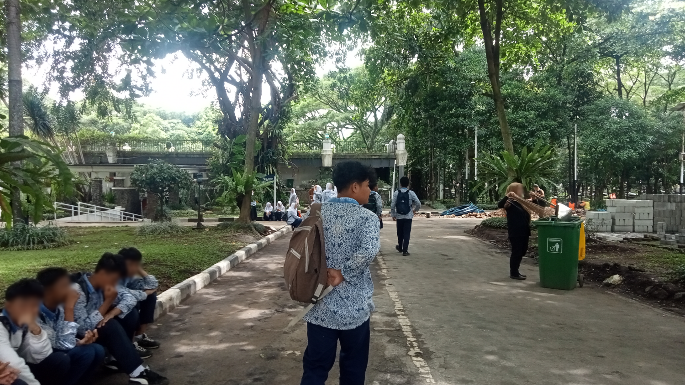

Halo, kontribusiku di projek メンタル Refusal adalah sebagai voice actor. kalian bisa memanggilku Fajar, aku lahir dan dibesarkan di kota Bandung, tahun kelahiran 2009. Aku dan Milano sudah saling mengenal setelah masuk SMP, meskipun kami sudah se-SD 😅.
Aku suka bermain game online, kalian bisa melihat betapa aku menyukai game pada profilku di sini. dari kebisingan tugas-tugas sekolah, aku sebagai pelajar juga sering menenangkan diri dengan mendengar musik, karena hanya dengan musiklah aku bisa menikmati proses. No music, no life.
Seperti yang aku katakan sebelumnya, aku di projek ini berkontribusi untuk mengisi suara dari beberapa karakter メンタル Refusal.
- 25 Februari 2026
Narahubung:
Mobile Legend: Bang Bang
cizy. : 547393293